Dein Mac, überall scharf
Video in vollen Farben und ein Bildschirm nach Maß, auf iPad, iPhone und iPhone Duo. Als würdest du direkt vor deinem Mac sitzen.

4,99 €, nur einmal bezahlen. Kein Konto, keine Werbung.
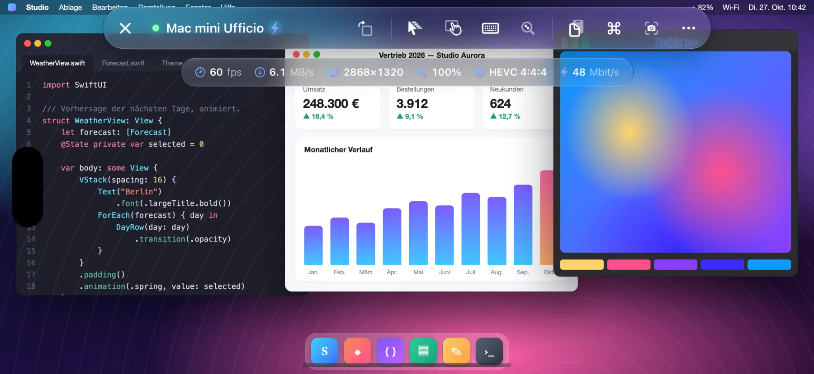
- 60 fps
- HEVC 4:4:4
- Retina
So funktioniert es
Open Remote PRO verbindet sich mit der in macOS integrierten Bildschirmfreigabe, die auch Apple Remote Desktop nutzt.
- Auf dem Mac installierst du nichts
- Du brauchst kein Konto
- Keine Daten laufen über fremde Server
Volle Farben, flüssige 60 fps
HEVC-4:4:4-Video in vollen Farben, per Hardware decodiert: Text so scharf wie auf dem Bildschirm des Mac, Verläufe und Fotos ohne Farbsäume. Scrollen, Fenster ziehen, ein Video ansehen: flüssig mit bis zu 60 fps und geringer Latenz.
Bietet der Mac keinen Videomodus, wechselt die App von selbst zu den klassischen VNC-Kodierungen.
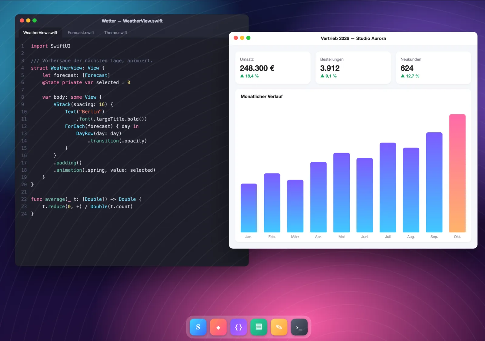
Der Bildschirm passt sich an
Der Mac erstellt einen virtuellen Retina-Monitor, genau so groß wie dein Bildschirm: keine schwarzen Balken, keine winzige Schrift. Gerät drehen, Split View oder Stage Manager nutzen, iPhone Duo aufklappen: Der Monitor passt seine Größe selbst an.
- Bei geöffneter Tastatur entscheidest du: mit zwei Fingern den verdeckten Teil ansehen oder den Mac-Bildschirm auf den sichtbaren Bereich verkleinern.
- Auf dem iPhone dreht eine Taste den Bildschirm auch bei aktivierter Ausrichtungssperre.
- Mac mit mehreren Monitoren: mit einem Tippen wechseln oder alle zusammen ansehen.
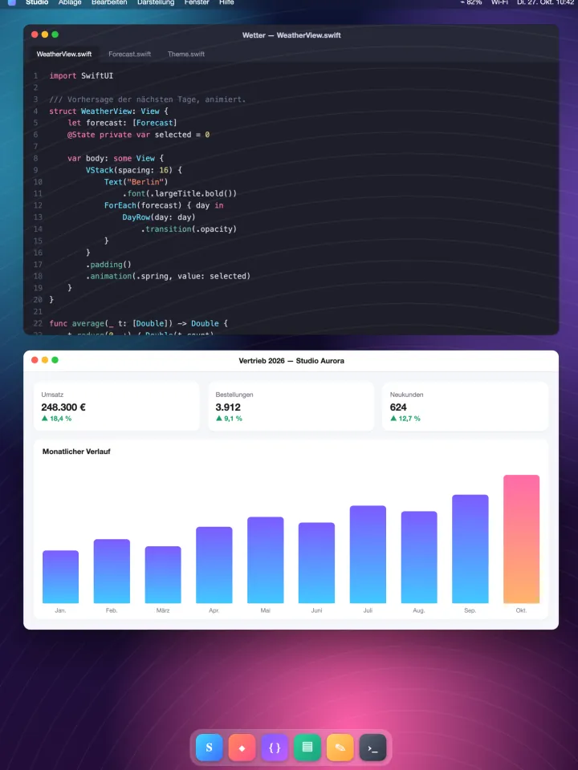
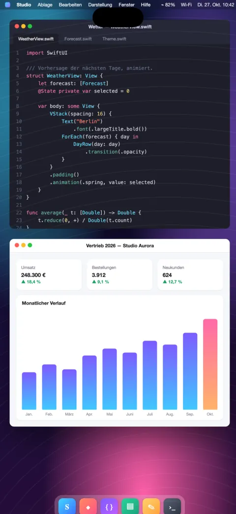
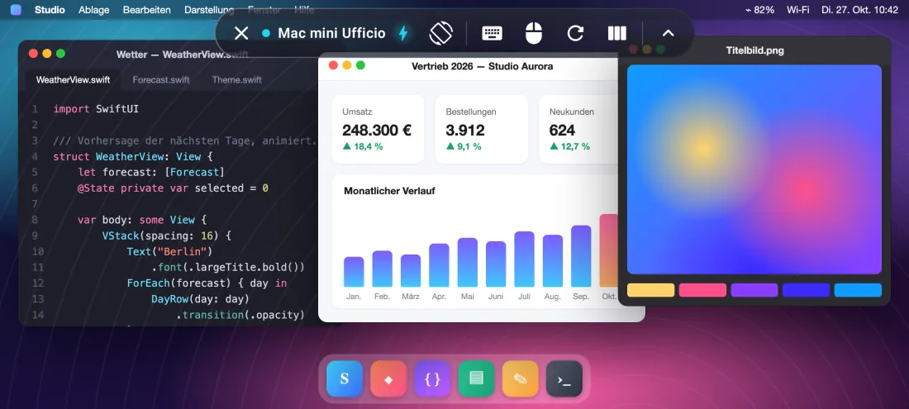
Optimiert für iPhone Duo
Klapp dein iPhone auf und der Mac-Bildschirm wächst mit, klapp es zu und er passt sich dem Außendisplay an.
Zugeklappt passt sich der Mac dem Außendisplay an. Aufgeklappt wird er zum echten 7,6-Zoll-Desktop mit dem Platz eines Notebooks.
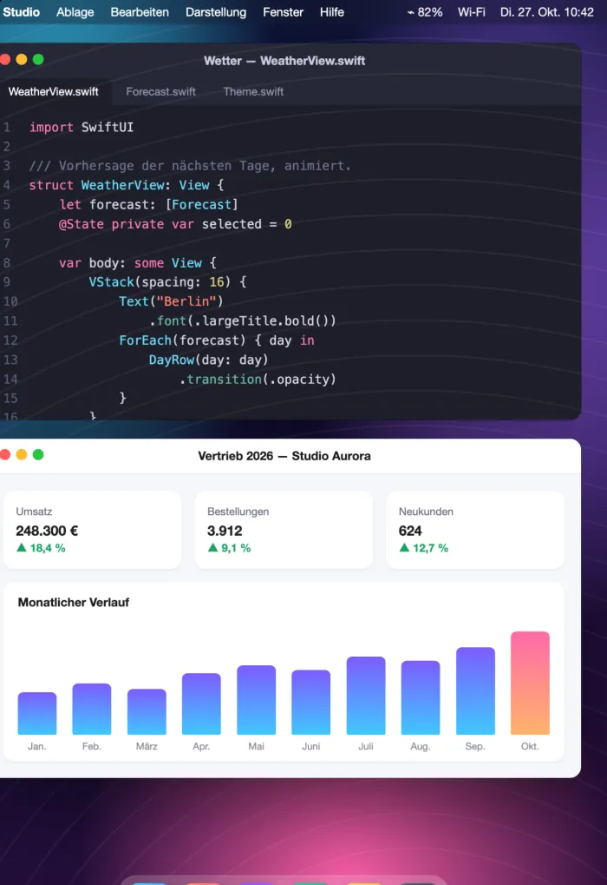
- Der virtuelle Monitor des Mac ändert seine Größe in dem Moment, in dem du auf- oder zuklappst: kein erneutes Verbinden, keine schwarzen Balken.
- Die Steuerleiste ordnet sich zwischen Außen- und Innendisplay selbst neu.
- Eine Taste zum Drehen und ein Drehvorschlag, wenn du das iPhone drehst.
Maus, Trackpad und Tastatur
Volle Unterstützung für Mäuse, Trackpads und Tastaturen mit Bluetooth oder USB, auch für Magic Keyboard, Magic Trackpad und Magic Mouse.
- Ein Zeiger, der sich bewegt und über Elemente fährt (Hover), wie auf dem Mac.
- Linksklick und Rechtsklick.
- Scrollen mit zwei Fingern auf dem Trackpad und mit dem Mausrad, stufenlos oder in Rasterschritten.
- Hardwaretastatur mit dem richtigen Layout, auch für Umlaute und Sonderzeichen.
- Sondertasten ⌘ ⌥ ⌃ ⇧.
Maus und Trackpad: auf dem iPad. Hardwaretastatur: auf iPad und iPhone.
Probier es aus: Drück ⌘, ⌥, ⌃ oder ⇧ auf deiner Tastatur.
Alle Macs auf einen Blick
Für alle, die mehrere Macs verwalten: zu Hause, im Studio oder im Büro.
- Du nutzt Apple Remote Desktop? Importiere die aus Remote Desktop exportierte Computerliste im Handumdrehen.
- Karten mit dem letzten Bild jedes Mac und dem Live-Status: verfügbar oder nicht erreichbar.
- Automatische Erkennung der Macs im lokalen Netzwerk und Schnellverbindung per Adresse.
- Fernverwaltung per SSH: Hardware, System und Volumes, installierte Apps, Bildschirm sperren, Ruhezustand, Neustart und Ausschalten, mit Prüfung der Identität des Mac.
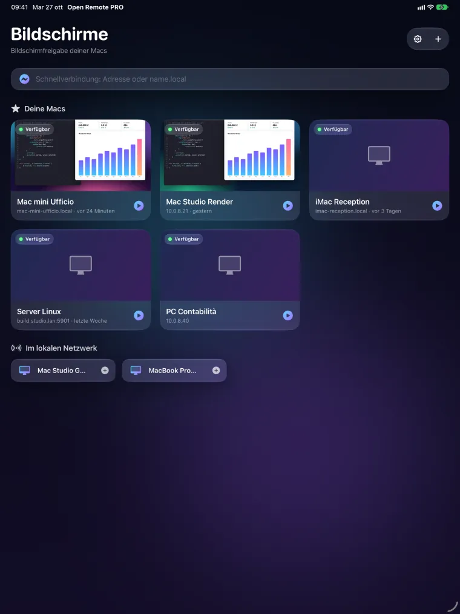
Steuerung, Kompatibilität, Privatsphäre
Natürliche Steuerung
- Trackpad-Modus oder direkte Berührung, Rechtsklick mit zwei Fingern, ruckelfreies Zoomen mit den Fingern.
- Präzises Scrollen mit Schwung; mit drei Fingern durch Seiten blättern.
- Leiste mit esc, tab, Pfeiltasten, F1–F12 und Sondertasten; fertige Kurzbefehle (Mission Control, Spotlight, Schnappschüsse und mehr).
- Gemeinsame Zwischenablage zwischen Mac und deinem Gerät; Schnappschüsse des Bildschirms zum Sichern oder Teilen.
- Beobachten-Modus: zusehen, ohne etwas zu berühren.
Auch PC und Linux
- Standard-VNC-Server unter Windows und Linux.
- Windows-PCs per Remotedesktop (RDP) auf iPad und iPhone.
Android, bald bei Google Play
Auf Android-Telefon, Foldable und Tablet: flüssig mit bis zu 60 fps, bis zu 120 auf Displays, die das unterstützen.
Privatsphäre ab Werk
- Kein Konto, keine Werbung, kein Tracking.
- Passwörter und Schlüssel bleiben im Schlüsselbund deines Geräts.
- Die App verbindet sich nur mit den Computern, die du angibst.
So sieht es aus
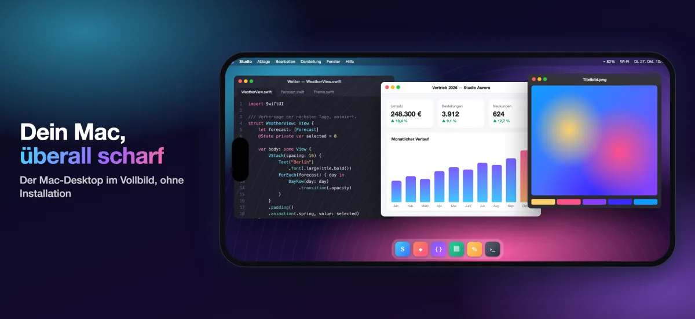
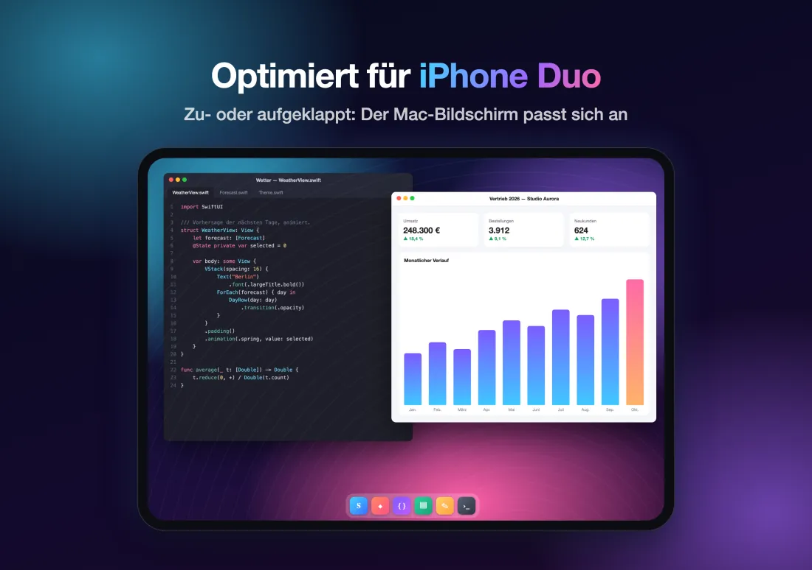
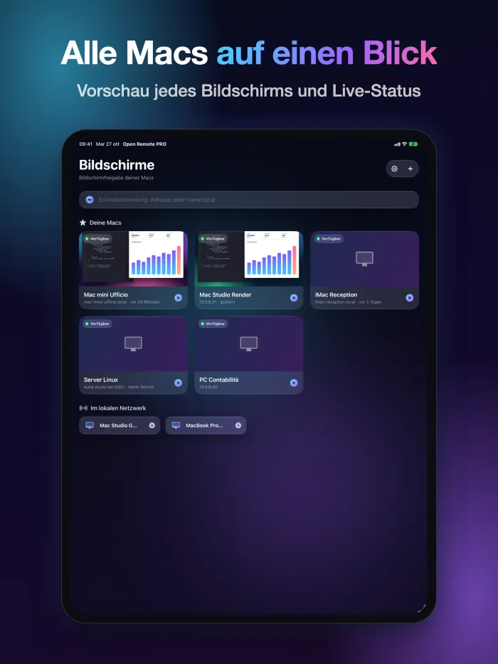
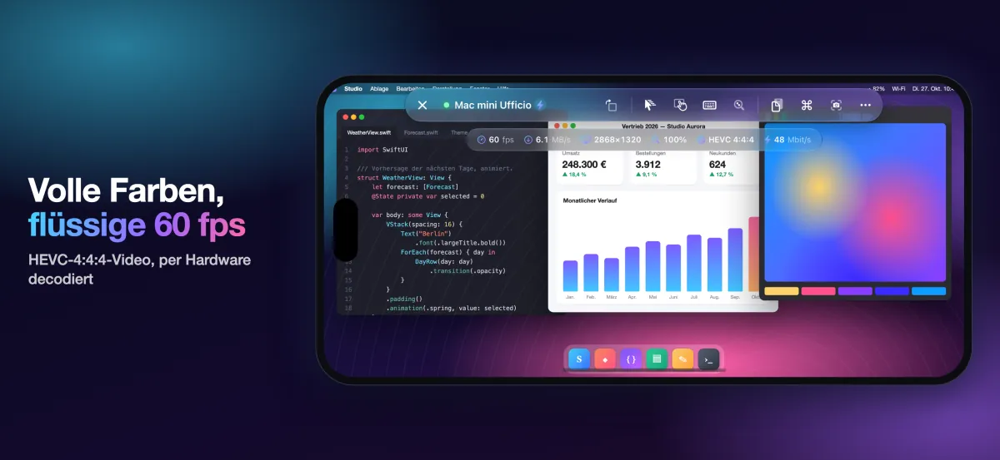
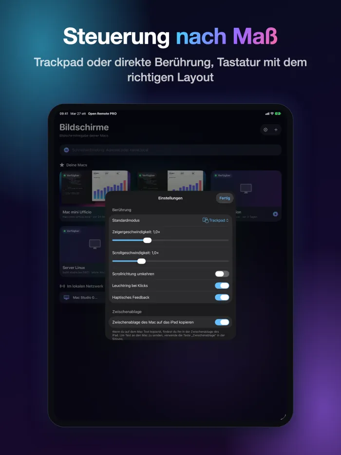
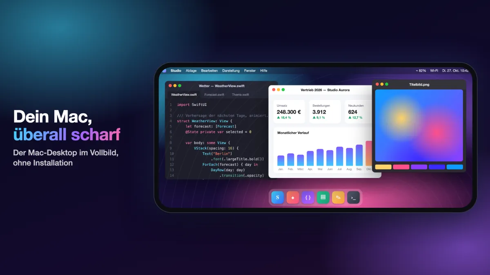
Einmal kaufen
4,99 €
Du bezahlst nur einmal, im App Store.
Preis in den Ländern mit Euro; anderswo gilt der im App Store angezeigte Preis.
Voraussetzungen
Für Video in hoher Qualität brauchst du einen Mac mit Apple Chip und macOS 14 oder neuer, mit aktivierter Bildschirmfreigabe (Systemeinstellungen › Allgemein › Teilen). Andere Macs und VNC-Server funktionieren mit den klassischen Kodierungen. Unterwegs nutzt du ein VPN.
Häufige Fragen
Was muss ich auf dem Mac installieren?
Nichts. Öffne auf dem Mac Systemeinstellungen › Allgemein › Teilen und aktiviere die Bildschirmfreigabe. Füge den Mac dann in der App hinzu (im selben Netzwerk erscheint er schon in der Liste) und melde dich mit Name und Passwort eines Benutzers dieses Mac an.
Was brauche ich für Video in hoher Qualität?
Einen Mac mit Apple Chip und macOS 14 oder neuer. Andere Macs und VNC-Server funktionieren mit den klassischen Kodierungen.
Funktioniert es auch unterwegs?
Ja, mit einem VPN in das Netzwerk des Mac. Gib die Bildschirmfreigabe nicht direkt ins Internet frei.
Funktioniert es mit Windows- und Linux-PCs?
Ja, mit Standard-VNC-Servern unter Windows und Linux. Auf iPad und iPhone verbindest du dich außerdem per Remotedesktop (RDP) mit Windows-PCs.
Welche Daten sammelt die App?
Keine: kein Konto, keine Werbung, kein Tracking. Computerliste, Passwörter und Schlüssel bleiben auf deinem Gerät, und die App verbindet sich nur mit den Computern, die du angibst.
Wann kommt die App für Android?
Die Android-App kommt bald zu Google Play, für Telefone, Foldables und Tablets.
Weitere Antworten auf der Support-Seite (auf Englisch).